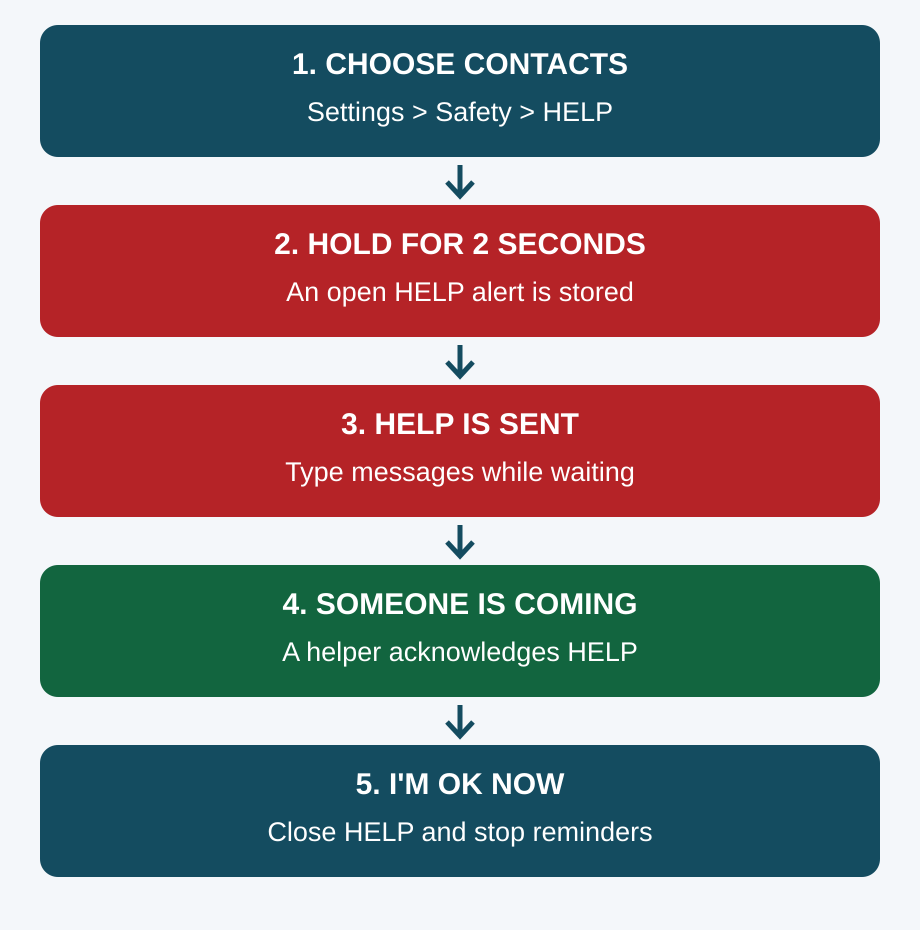
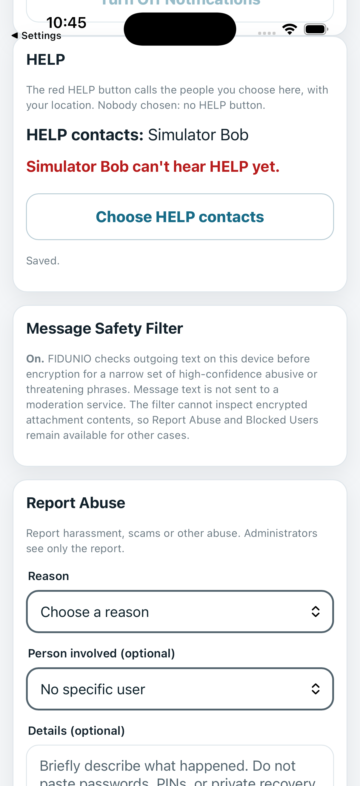
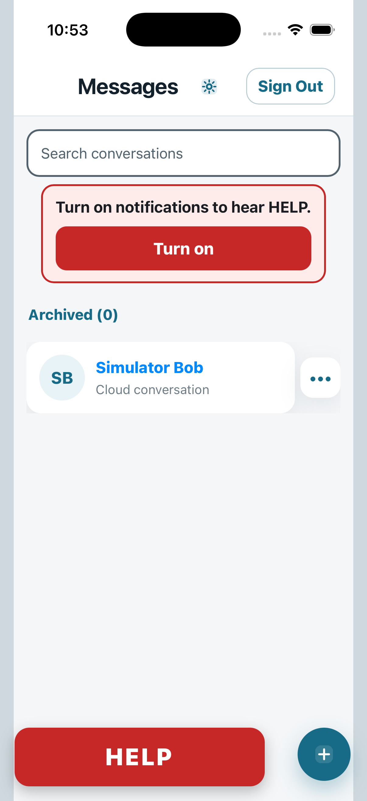
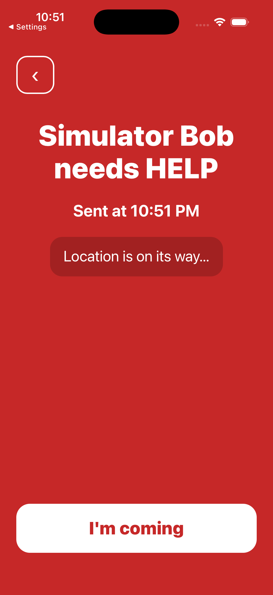

Cuberoot Systems · Large-print guide
FIDUNIO
HELP Guide
These instructions describe FIDUNIO 1.1.88. The App Store, TestFlight, Android download and web app can be on different releases. Check the version shown in Settings > About. The pictures are real simulator screens with fictional accounts, captured on 27 November 2026; they illustrate the shared HELP interface, not delivery guarantees.
HELP at a glance

1. HELP: choose your contacts first
- Open Settings > Safety > HELP.
- Tap Choose HELP contacts. Select up to five trusted FIDUNIO members; you cannot select yourself.
- Tap Save and wait for Saved. The chosen profile names appear in the HELP card.
- Return to Messages. The red HELP bar appears when at least one contact is saved. On iPad it is in the left list area.
- Ask each contact to open FIDUNIO and enable notifications on the device they will use. Agree how you will respond before relying on HELP.
With one contact, HELP uses your existing direct conversation. With two or more contacts, it uses the encrypted HELP group named from your profile. The large HELP screen is a view of that conversation, not a separate message history.
If nobody is selected, there is no HELP bar. To change contacts, reopen Choose HELP contacts and Save. Cancel closes the chooser without saving your selection.

2. HELP: check notifications on every device
- If Messages says Turn on notifications to hear HELP., tap Turn on and allow the system prompt.
- If permission was previously refused, use Open Settings and allow FIDUNIO notifications in the device's settings. Return to FIDUNIO afterward.
- In Settings > HELP, a warning such as Bob can't hear HELP yet. means notifications are off or have not been confirmed for that account. Ask the contact to open the app and check them.
- Check sound volume, notification sound and Focus / Do Not Disturb settings. Test with your contacts while everyone is available.
A missing warning is not a delivery receipt or a guarantee of sound. Network availability, permission, registration, Focus and device settings can still affect alerts. Browser capabilities differ from native iPhone/iPad, Android and Fire apps.
The current iPhone/iPad alarm uses a bundled sound with Time Sensitive delivery. Apple Critical Alerts approval is pending; do not assume HELP overrides silent mode or Focus. Android/Fire use the HELP alarm channel and alarm audio settings.
The server is configured to repeat unanswered HELP alerts about every 30 seconds until someone answers or the sender closes HELP. Actual arrival times depend on the network and notification providers. Repeated iPhone/iPad alerts replace the previous notification instead of building a pile.

3. HELP: send an alert
- On Messages, tap the red HELP bar.
- Press and hold the large HELP button for two seconds, until its ring completes. A quick tap does not send.
- Allow location if you want to share it. HELP can be sent even if location is unavailable; the alert and location message are separate.
- Wait for HELP is sent. If it says HELP did not go out, check the connection and hold again.
- Use Type a message and Send to explain what you need. Check the message status. Keep the HELP screen open if useful.
Location is a point obtained when HELP is sent, not continuous tracking. Open in Maps appears when an encrypted location card is available. Without that card the helper may see Location is on its way...; describe where you are in a message if needed.
A photo, video, voice message or file in this conversation appears as a short label on the large HELP screen. Open the regular chat to view the attachment itself.

4. HELP: messages and a response
HELP is sent means the alert was stored. The screen names your chosen contacts and shows the conversation. You can type while waiting. Every message also appears in the regular direct chat or HELP group.
When a contact taps I'm coming, your screen turns green and shows their profile name. Your conversation and unsent draft remain on the screen. This means the contact acknowledged HELP; it is not a location or arrival confirmation.
When you are safe, tap I'm OK now. Wait for the app to confirm closure. This stops unanswered reminders and sends the OK update to the chosen contacts. If closure fails, check the connection and retry.

5. HELP: when you are a contact
- Tap the HELP notification and unlock FIDUNIO if asked. The red screen identifies who needs HELP.
- Use Open in Maps when a location card has arrived. If location is unavailable, read the messages and ask where the person is.
- Tap I'm coming only when you can respond. Your acknowledgement is shared with the sender and the other HELP contacts.
- Use the message box on the same screen to communicate. The same messages remain in the ordinary chat.
- When the sender taps I'm OK now, the alert ends. After that, ordinary chat notifications open the regular conversation.
Version 1.1.88 checks the server for open HELP before deciding where a tapped notification should lead, covering a HELP sent while the app was asleep and its chat notification tapped first. This check may take several seconds. It still requires a working connection.
Opening or unlocking FIDUNIO can also present an unanswered incoming HELP. If a selected alert has already closed, the screen can say This HELP is over.

6. HELP: privacy and practical limits
Message text and the shared location card travel inside the existing end-to-end encrypted conversation. The HELP server handles operational metadata: sender, selected helper accounts, alert state, acknowledgements and timestamps. It also handles device routing and reachability metadata. Do not describe the entire alert record as encrypted message content.
HELP notifications can display the sender's profile name and short status, such as HELP, is coming or is OK now. They do not contain the encrypted conversation text or location coordinates.
The normal chat can include earlier conversation history. The large HELP view focuses on the current HELP and recent messages. Closing an alert does not delete the regular encrypted conversation. The server's alert-metadata cleanup policy is separate from chat retention.
Use HELP with people who have agreed to respond. It depends on connectivity and their device settings. It is not an emergency-service dispatch system and does not guarantee a response.
7. Troubleshooting HELP and everyday messaging
Support: willyros01@gmail.com. Include the version, device, what you tapped and the exact error. Exclude passwords, PINs, recovery material and private conversation content.
| What you see | What to do |
|---|---|
| No HELP bar | Save at least one HELP contact, return to Messages, and confirm the current version. On iPad look in the left list area. |
| A contact can't hear HELP yet | Ask the contact to open FIDUNIO, enable notifications and check system settings. A contact being listed does not prove notification delivery. |
| Location is on its way... | Allow location if appropriate, wait for the encrypted card, or type your location. HELP is not continuous tracking. |
| HELP did not go out | Check internet access and hold again. Do not assume the alert was delivered. |
| Not sent - tap to send again | Use the retry control, check connectivity and confirm the message becomes sent. |
| Notification opens the wrong screen | Record the version, device, alert/chat notification type and whether FIDUNIO was closed or asleep. Preserve the installation and report the result. |
| Missing PIN record | Use the existing password plus encryption PIN. A failed check stays locked; do not reset the device before saving evidence. |
| Unreadable or delayed Settings | Confirm the app version and text/appearance settings. Report the exact section and whether this followed restart or unlock. |